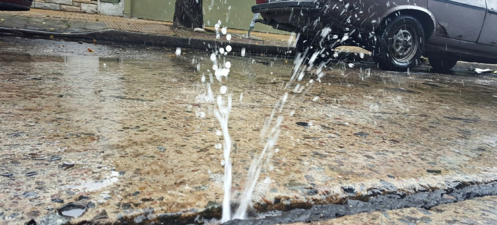
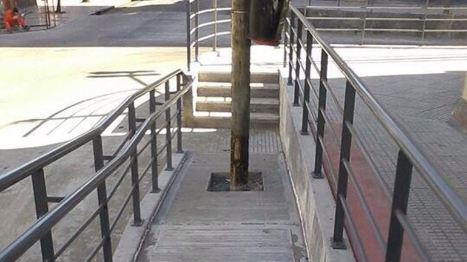

Hace pública tu denuncia edilicia de la Ciudad
¿Estas cansando de de denunciar el corte de luz, el bache a mitad de cuadra o la boca de tormenta tapada, y que nadie lo solucione?. Hace pública tu denuncia de falla edilicia así se enteran todos los vecinos, a ver si en conjunto nos dan una solución. Para saber mas sobre este sitio hace clic en Sobre Nosotros.
-
Calle Obstruida
Villa UrquizaEn la tormenta del Viernes 5 de Junio se cayó este árbol que esta obstruyendo parte de la calle de...
4 -
Semáforo Roto
BalvaneraSe realizó la denuncia de este semáforo hace 2 meses, aún sigue así. Es en el cruze de las calles...
-
Bache
Villa CrespoPor la gran cantidad de colectivos que pasan siempre tenemos problemas de baches en esta cuadra, los arreglos nunca quedan bien hechos...
-
Rampa Rota
CaballitoNo es la unica rampa rota de la cuadra, mi abuela usa silla de ruedas y no puede ni salir a comprar la comida...
-
Plaza Vandalizada
RetiroLa plaza hace ya 3 meses que no tiene mantenimiento general. Este banco esta roto hace mas de 1 semana...
-

Semáforo No Funciona
FloresEl semáforo no funcionando ya genero 2 accidentes. Se realizaron 4 denuncias y todavia no lo arreglan...
-
-

Caño de Agua Roto
FloresSe esta inundando toda la cuadra a causa de este caño roto, ya llamamos al gobierno de la ciudad y a AySA hace 1 semana...
-
Poste de Luz
FloresLa denuncia fue hecha hace un mes y el poste sigue asi. Es un peligro pasar cerca...
-

Rampa Obstruida
BalvaneraEs el colmo, la rampa no se puede utilizar, es en la entrada de la Escuela Tecnica N12..
-
Basura sin Recoger
San NicolásEsta realizada la denuncia hace casi un mes y sigue la basura ahi, es un asco pasar cerca..
-
Boca de Tormenta Tapada
AgronomíaHago publica esta denuncia ya que no tenemos respuesta del gobierno. La boca de tormenta esta totalmente tapada..